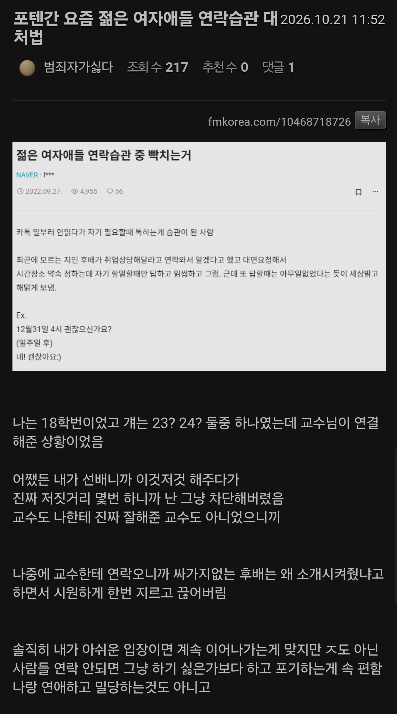

이상하다는 요즘 여자애들 연락습관.jpg
댓글
댓글 존나 웃기네 ㅋㅋㅋ
결국 지도 체리피커인 주제에 뭔 정당화를 저리하고있어 ㅋㅋㅋ
찐따 한마리 날뛰는중 ㄷㄷ
1페이지 투기장 쭉 읽는데 암걸리겠네..
당장 내 카톡에도 두명있음
좀 더 맘에 안들면 손절 해야지
인성교육 제일 조진친구가 가정교육 이야기하면서 날뛰고 있네 ㅋㅋㅋㅋ

댓글 존나 웃기네 ㅋㅋㅋ
결국 지도 체리피커인 주제에 뭔 정당화를 저리하고있어 ㅋㅋㅋ
찐따 한마리 날뛰는중 ㄷㄷ
1페이지 투기장 쭉 읽는데 암걸리겠네..
당장 내 카톡에도 두명있음
좀 더 맘에 안들면 손절 해야지
인성교육 제일 조진친구가 가정교육 이야기하면서 날뛰고 있네 ㅋㅋㅋㅋ
어디 많이 아픈 젠-틀-남 한명있네